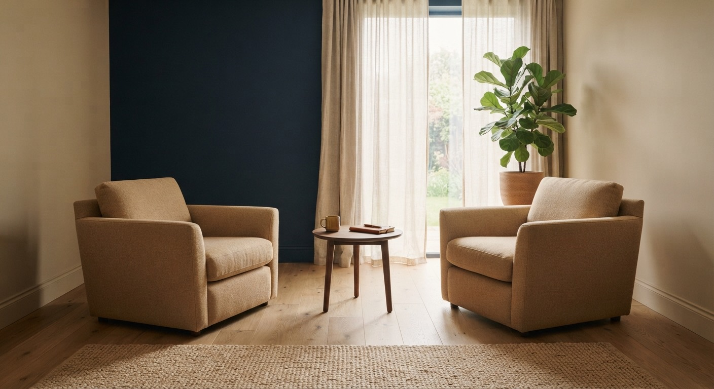

Ich arbeite mit Menschen, die viel tragen.
Ich kenne Druck aus eigener Erfahrung: Jahre als aktiver Trader haben mir gezeigt, wie sehr Angst, Ungeduld und alte Glaubenssätze Entscheidungen steuern — und wie viel sich ändert, wenn man die Muster dahinter bearbeitet.

Vom Regelwerk zum Muster.
[Kurzbiografie: Wo kommst du her, was hast du beruflich gemacht, was hat dich zum Coaching gebracht? 3–5 Sätze.]
Über Jahre habe ich als aktiver Trader an den Finanzmärkten gearbeitet. Kaum ein Umfeld zeigt so schonungslos, wie sehr Angst, Gier, Ungeduld und alte Glaubenssätze Entscheidungen steuern — und wie wenig Wissen allein dagegen hilft. Ich hatte Regelwerke, Statistiken, Pläne. Und ich habe sie trotzdem gebrochen, wenn der Druck groß genug war.
Der Wendepunkt kam, als ich verstanden habe: Das Problem lag nicht im Wissen, sondern in automatischen Mustern. Ich habe angefangen, an diesen Mustern zu arbeiten — zuerst bei mir selbst, dann in der Ausbildung zum Neuro-Resonanz-Practitioner bei Denys Scharnweber ([JAHR]).
Heute arbeite ich mit Menschen, die in ihrem Bereich leistungsfähig sind und trotzdem merken: Da bremst etwas. Manchmal ist das der Kopf, oft der Körper, meistens beides.
Ausbildung
Neuro-Resonanz-Practitioner, Denys Scharnweber Akademie. Practitioner-Status nach den Richtlinien des DVNLP. Über 130 Stunden Training, schriftliche und mündliche Prüfung.
Haltung
Auf Augenhöhe, direkt, ohne Guru-Pose. Ich sage dir, was ich sehe — auch wenn es unbequem ist. Und wenn eine Behandlung sinnvoller ist als Coaching, sage ich dir auch das.
Arbeitsweise
Kurze Wege statt jahrelanger Prozesse. Wir arbeiten an konkreten Situationen aus deiner Woche — im Kopf und im Körper. Was im Coaching gesagt wird, bleibt dort.
„Nicht härter arbeiten. Sondern endlich an der richtigen Stelle."
Timo Winheller
30 Minuten. Dann weißt du, ob es passt.
Kostenfrei, online, ohne Verpflichtung. Du schilderst dein Thema, ich sage dir ehrlich, ob und wie ich helfen kann.
Erstgespräch anfragen